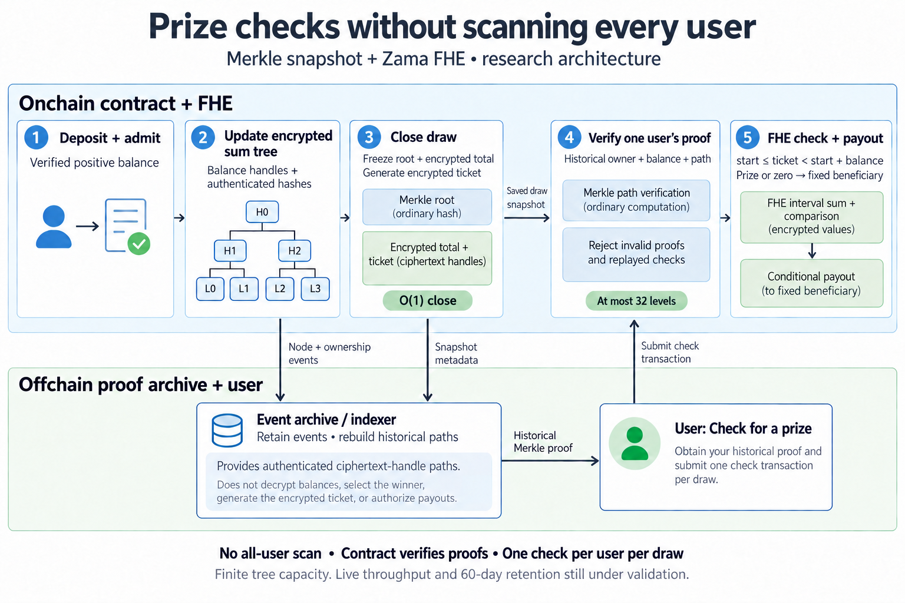

Scaling a confidential prize pool beyond 32 participants
The bottleneck
Kettigo is a savings prototype in which deposits earn entries into a prize draw, while balances remain encrypted. Its first draw design supported only 32 participants—not because 32 is a meaningful product limit, but because the closing transaction did too much work.
To close a round, it scanned every participant, accumulated encrypted balances, determined the winning ticket and credited the prize using fully homomorphic encryption (FHE). Every additional participant increased the work and lengthened the chain of dependent operations in one transaction. Raising the limit would only postpone the same problem.
Move the work out of draw closure
The alternative is a Merkle tree whose leaves hold encrypted balances. Deposits update the encrypted sum tree as they happen. When a round closes, the contract freezes the tree root and creates an encrypted winning ticket.


After that, participants verify their own outcome. A Merkle proof authenticates the balance and position they held at closure. FHE then determines whether the encrypted winning ticket falls within that participant’s ticket interval. If it does, the prize is paid to the beneficiary bound to the authenticated proof.
This is the important change: closing a draw no longer scans all users. A proof check follows no more than 32 tree levels, independent of how many slots are occupied. The tested tree accommodates up to 232 slots, although usable scale will ultimately also depend on arithmetic limits, storage and network throughput.
Testing the approach
Local validation funded 4,096 accounts and ran a prize check for every one using a simulated FHE backend. A separate 24-hour Sepolia run used real FHE with eight wallets across 48 cycles, producing 1,635 confirmed transactions with no mined reverts and correct principal and prize accounting.
The live run was useful precisely because it was not frictionless. RPC failures, service timeouts and unavailable historical logs all appeared. Recovery from retained events worked, which makes durable archival storage a real design requirement rather than an implementation detail.
The implementation and validation records are available in the Kettigo source repository, including the experimental contract, local validation and Sepolia results.
What remains
This demonstrates a viable path beyond the original 32-participant design; it does not establish production readiness. Maximum live throughput and long-horizon recovery over a 60-day draw have not yet been demonstrated, and integration into the product remains work to do.
Still, the design changes the question from “how many people can fit in a draw-closing transaction?” to “how reliably can participants retrieve a historical proof?” That is a far more tractable systems problem—and it preserves the privacy properties that make the prize pool interesting in the first place.